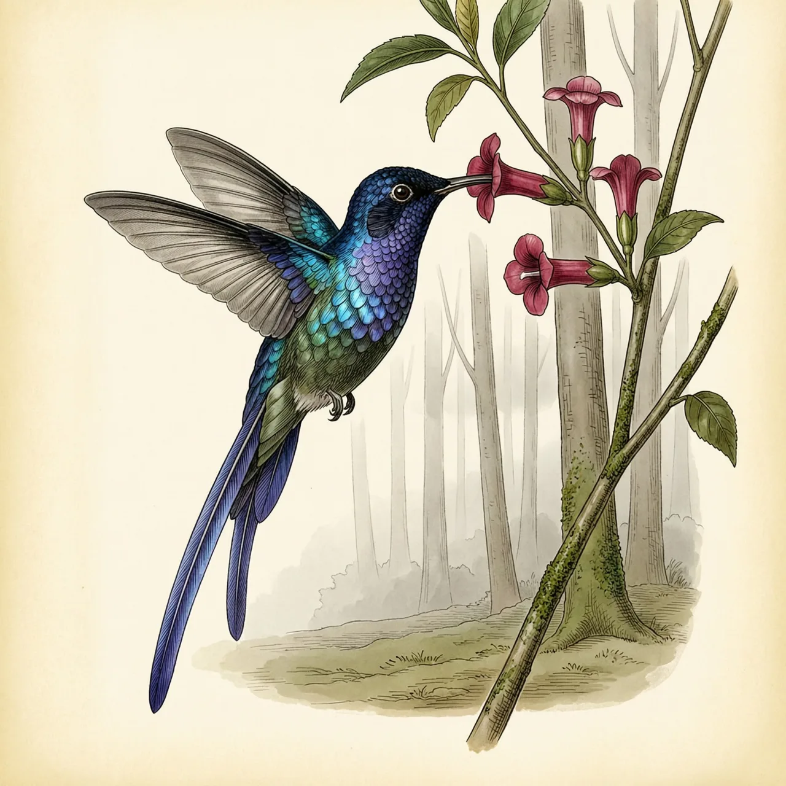
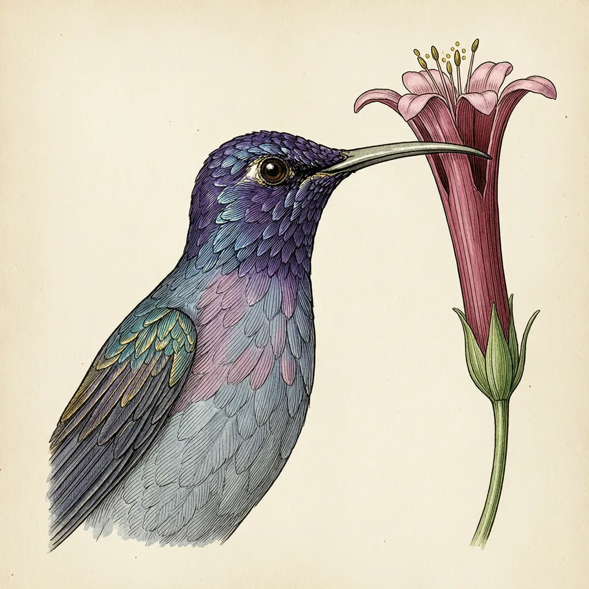

紫长尾蜂鸟是体重仅约5.61克的小型蜂鸟，住在半开放的高大树林里，以植物花蜜为主食。最反常的是尾巴：尾长约92.2毫米，比约62毫米的翼长还多出一大截，尾巴反而长过翅膀。这条长尾一般被解释为性选择的结果，代价落在飞行上。
树高，但彼此间留有空隙，阳光能落到林下。紫长尾蜂鸟住的就是这种半开放的高大树林。它是留鸟，在分布区内终年停留，不做季节性迁移。它属于新热带界的鸟类，分布常被记在安第斯山的东坡。一片终年不离的林子，意味着它一整年的食物都押在这片森林开着的花上。
它的嘴细得罕见：嘴峰长约18.5毫米，喙宽约2毫米、厚约1.7毫米，接近一根针的规格。紫长尾蜂鸟的主食是植物的花蜜，取食方式就写在嘴的形状上——细长的喙探进花里，把蜜吸走。全部家当加起来约5.61克重，跗蹠也才约5.8毫米长；这样轻的身子才悬得住，也才供得起整天访花的开销。
多数鸟的翅膀比尾巴长，紫长尾蜂鸟把这个顺序反了过来：尾长约92.2毫米，翼长约62毫米，尾巴反而长出翅膀一头。雄鸟的中央尾羽尤其长，泛紫蓝色光泽；拖着一条比飞行器官还长的尾巴在林子里穿行，转弯、加速、躲避天敌都要多付成本。对这条尾巴最通行的解释是性选择——雌鸟的选择使它被一代代保留。而有一点是清楚的：这5.61克的身子每天起飞，都得带着92.2毫米的尾巴。
